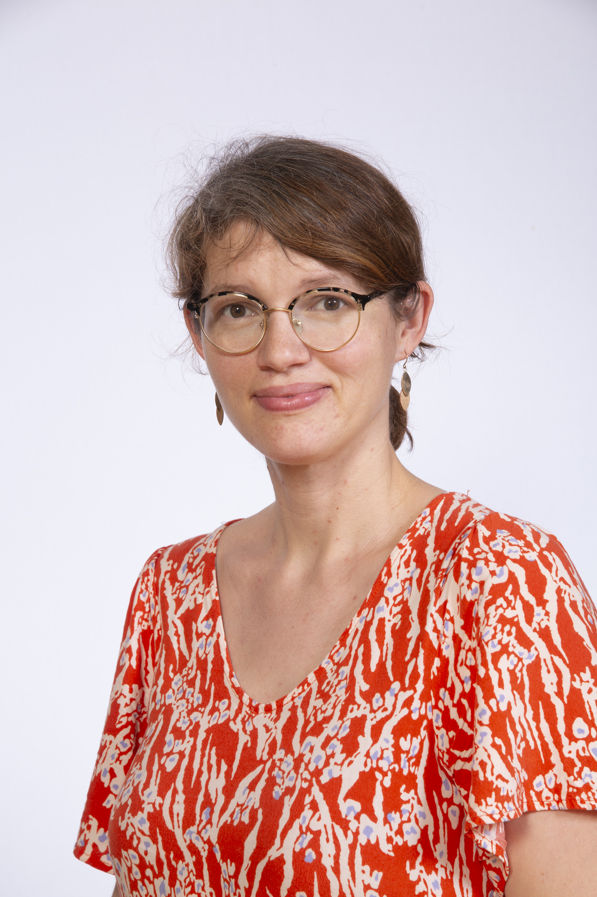

CNRS Junior Researcher at CRIStAL
emilie.kaufmann"at"univ-lille.fr
Inria Lille - Nord Europe
Equipe Scool, Bureau A07
40, avenue du Halley
59650 Villeneuve d'Ascq, FRANCE
+333.59.57.79.12.
|
Welcome to my professional webpage.
I am a CNRS researcher in the CRIStAL at Université de Lille. I am also a member of the Inria team Scool. I am interested in statistics and machine learning, with a particular focus on sequential learning. The kind of (stochastic) models I study are variants of the Multi-Armed Bandit (MAB) model, a powerful framework for sequential resource allocation, and Markov Decision Processes (MDPs). I have worked on both reinforcement learning ("maximize rewards while learning") and adaptive testing ("learn as fast as you can by adaptively collecting data") formulations. On the application sids, my recent interest is in the potential use of bandit strategies for adaptive early stage clinical trials.
NEWS: Scool is hiring! In particular I am looking for:
|
 |